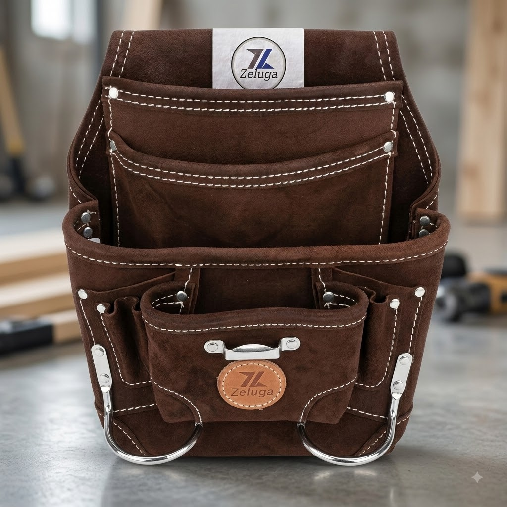
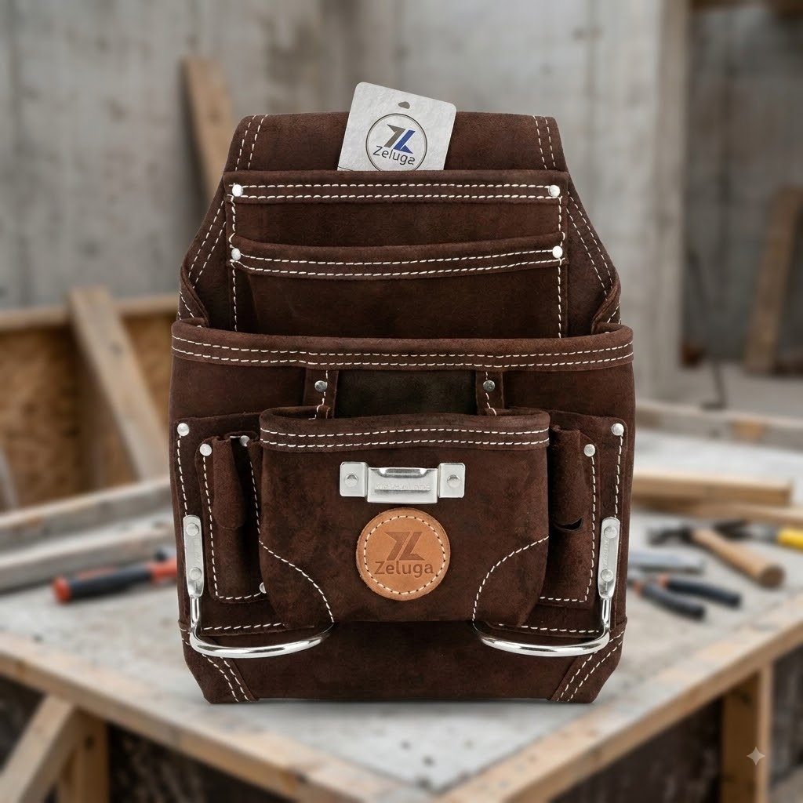
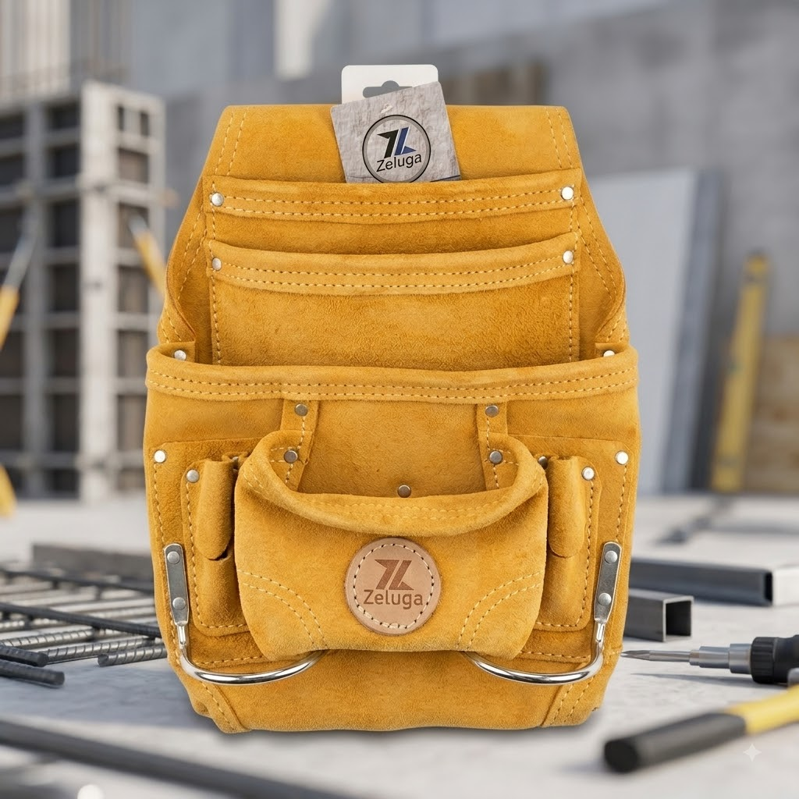

Funda de cuero gamuza Zeluga de 10 bolsillos con porta-martillo
$37.00 USD
🧰 Funda de cuero gamuza Zeluga — todo tu herramental a la mano
Fabricada en cuero gamuza grueso color café, con 10 bolsillos de distintos tamaños para clavos, tornillos, cinta métrica y herramienta de mano. Incluye dos ganchos metálicos reforzados para colgar martillo o pinzas.
✅ Cuero gamuza de uso rudo
✅ 10 bolsillos organizadores
✅ Doble porta-martillo metálico
✅ Costuras y remaches reforzados
✅ Ideal para carpinteros, albañiles y contratistas
Se adapta a cualquier cinturón de trabajo estándar. 💪
Pedir por WhatsApp